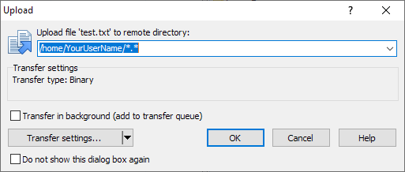

This page will provide a tutorial on how to host or "publish" a website on Weber State University's Icarus server. Icarus is what WSU calls the Linux server it hosts for computer science students. This tutorial assumes that you're using the Microsoft Windows operating system.
You will need three things before we begin:
- Your website's HTML files and resources
- Your Icarus login credentials (username and password)
-
An SFTP (SSH File Transfer Protocol) client
- I will be using WinSCP for this. It's only compatible with Windows
- If you're on a Mac, Cyberduck is the WSU recommended alternative
Instructions for Icarus login credentials and SFTP clients can be found at WSU's remote access info page.
Uploading a Website
Step 1. Open your SFTP client. This tutorial will specifically use WinSCP. Once you open it, under all the toolbars on the left you should see a reflection of some location on your computer. On the right will be a blank panel. This blank panel will show the files and folders of your portion of the Icarus server once a session is established.
Step 2. Open a session with the WSU Icarus server by clicking the "Session" button on the top toolbar, and then clicking "New Session...".
Step 3. A login window will pop up. Ensure that the file protocol is set to "SFTP". Next, enter the address "icarus.cs.weber.edu" (without quotes) into the field labeled "Host name". Thirdly, set the "Port number" field to 22. Finally, enter your Icarus username and password into the respective fields. When you've entered all of that info, WinSCP will allow you to save that login information for later ease of access by clicking the "Save" button. Otherwise, you can choose to simply proceed by clicking the "Login" button with the green icon. Below is an image of the relevant fields with the proper file protocol, host name, and port number set.
Step 4. The right panel should open to your home folder on the Icarus server. If you haven't ever used it before, you should only see a "public_html" folder and an "up one directory" folder icon (with the name ".."). The latter is just a navigation button, not a real folder.
Step 5. Double-click the "public_html" folder to open it. As a rule of thumb, anything placed inside the "public_html" folder will be publicly accessible by anyone with the proper URL. Anything outside of it will only be accessible by you and you alone (assuming no one else has your login credentials).
Step 6. To upload a file or folder to Icarus, you will need to locate it in the left panel (which represents your own computer's file system). If you don't know where to start looking, a filepath to a location familiar to many is "C:\Users\[YOUR USERNAME]\Documents", which is your local documents folder.
Step 7. Once you've located your website files, you can upload them by clicking and dragging them from the left panel to the right.. Clicking and dragging over a file uploads that singular file. Clicking and dragging over a folder will upload that folder and all of its contents. To upload multiple files at once, you will need to create a selection first. You can either box-select items, use shift-key selection for consecutive items, or ctrl-key selection for non-consecutive items. After your selection is complete, click and drag them over or use the "Upload" button at the top left of the panel.
Step 8. One last upload confirmation window might appear. You can leave all of the settings as their defaults and simply click the "OK" button. Your upload will commence and your files will be on the remote server after completion.
How to Compose a URL
After your website is uploaded to your public_html folder, you'll still need to craft the URL to access it from a web browser.
Step 1. All URLs for websites hosted on Icarus will begin with the Icarus domain name. That is: "icarus.cs.weber.edu". This is the beginning of your URL.
Step 2. Next, all URLs for websites uploaded by you will have your username placed after a forward slash and a tilde character (~). Using "YourUserName" as we have in previous examples, your new URL would be "icarus.cs.weber.edu/~YourUserName". This URL is technically pointing directly at your public_html folder.
Step 3. All that's left now is to fill in the filepath to point towards the .html file you want the user to load when they enter this URL into their web browser. 3 examples follow for how to compose the last part of your URL for different situations.
Situation 1: You have an .html file sitting directly in your public_html directory. Type the name and extension of your .html file after your initial URL and a forward slash.
Finished example URL: icarus.cs.weber.edu/~YourUserName/website.html
Situation 2: You have an .html file within a subfolder named "site_folder" inside your public_html directory. Type the folder name before you type the file name and extension, all separated by forward slashes.
Finished example URL: icarus.cs.weber.edu/~YourUserName/site_folder/website.html
Situation 3: You have an "index.html" file in your public_html directory. HTML files with the name "index" are special since browsers will look for them and load them when they're given a URL that only points to a folder without specifying a file. If you don't specify an .html file in your URL, your browser will look for index.html and load it if it finds it.
Finished example URL: icarus.cs.weber.edu/~YourUserName